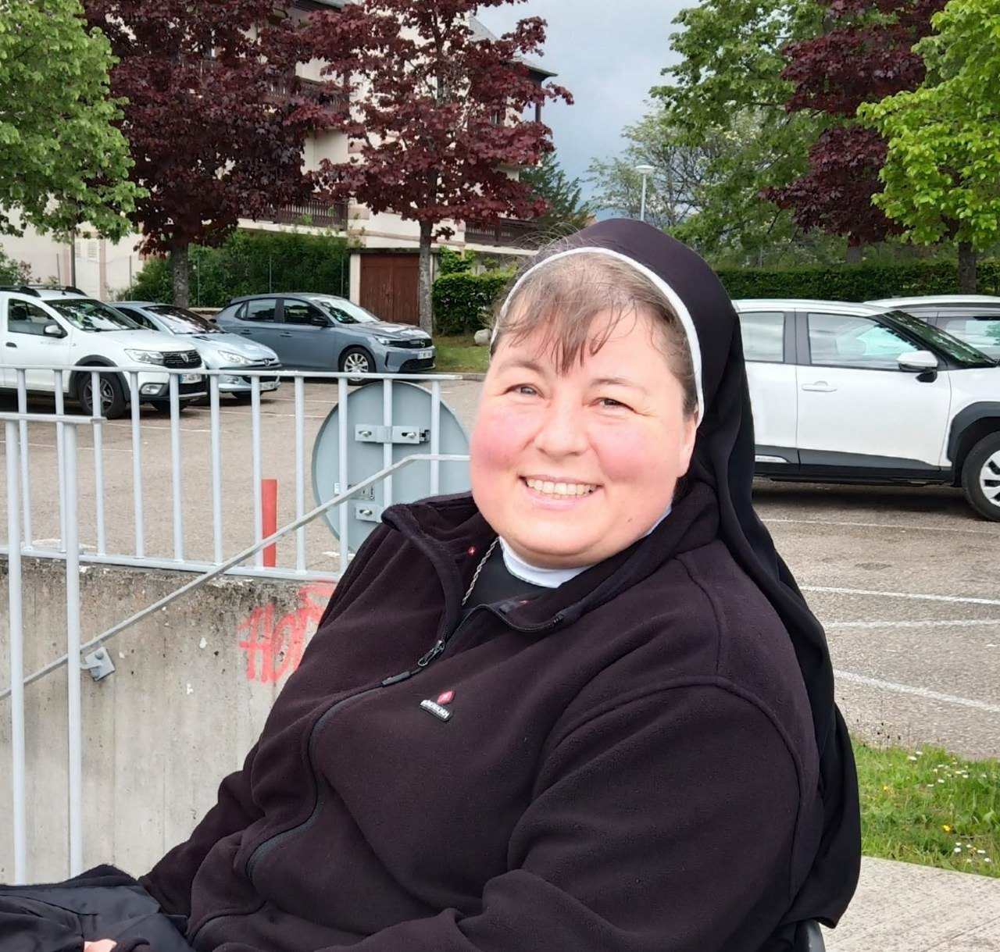
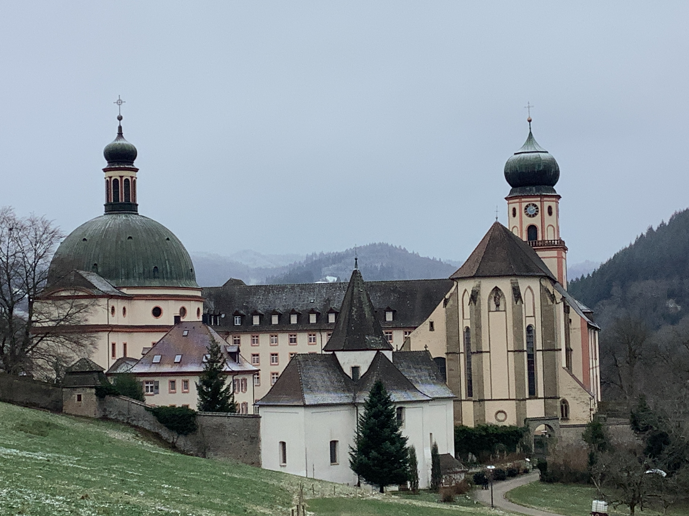
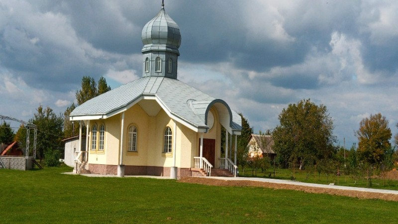

Neue Provinzverwaltung - Frankreich
- Sr. Sheeba Thomas – Provinzialoberin
- Sr. M. Suzanne – Stellvertretende Provinzialoberin
- Sr. Mary Thomas, Sr. Jancy & Sr. Sophia – Provinzräte
ALLGEMEINE VERWALTUNG
Sr. Shobha Stanly
Generaloberin
Sr. Deepa Paul
Generalsekretärin

Sr. Marie Therese Frie
Assistentin der Generaloberin
Sr. Mary Kannampuzha
Generalkonsulin
Sr. Ligy Payyappilly
Generalkonsulin
Sr. Danièle Vetter
Generalkonsulin

ST. TRUDPERT GERMANY.
Das Kloster St. Trudpert, im 7. Jahrhundert von Sankt Trudpert gegründet und von der Familie Liutfride unterstützt, ist ein spirituelles Zentrum im Münstertal, Deutschland. Trotz des Deutschen Bauernkriegs von 1525 und des Dreißigjährigen Kriegs im Jahr 1632 blieb das Kloster eine Bastion des Glaubens. Die Überführung der Reliquien von Sankt Trudpert im Jahr 901 erhöhte seine Heiligkeit und zog zahlreiche Pilger an. Nach der Säkularisation 1806 wurde es Teil des Großherzogtums Baden. 1920, während des Ersten Weltkriegs, wurde die St. Trudpert-Provinz gegründet, um den Schwestern der Kongregation SJSM Sicherheit zu bieten. Diese neue Provinz im Schwarzwald wurde zu einem Zufluchtsort für spirituellen Schutz in turbulenten Zeiten und bewahrte das Erbe des Klosters. Heute bietet die mittelalterliche Architektur des Klosters St. Trudpert den Besuchern einen beeindruckenden Einblick in sein reiches religiöses Erbe. Der malerische Schwarzwald und die ruhige Umgebung tragen zur spirituellen Atmosphäre bei. Pilger und Besucher finden hier einen Ort der Besinnung und Inspiration.

REGION UKRAINE
SJSM hat seine Mission 1998 in der Ukraine erweitert. Die erste Gemeinschaft wurde in Kiew, der Hauptstadt der Ukraine, errichtet. Später, als neue Kandidaten aus der Ukraine unserer Kongregation beitraten und Mitglieder wurden, bestand die Notwendigkeit, weitere Klöster zu haben. Daher gründeten wir eine Gemeinschaft in Lemberg zur Ausbildung und in Pausching, um unser Charisma der Anbetung und des Dienstes zu leben und zu verbreiten. Im Jahr 2023 erhielt die Ukraine den Status einer Region. Das erste Regionalkapitel fand ab dem 14. August 2023 statt: Sr. Christina wurde zur ersten Regionsoberin gewählt, Sr. Laura zu ihrer Assistentin und Sr. Erika zur Regionalkonsultorin. Die vergangenen zwei Jahre Krieg mit Russland haben ihren Dienst an den Bedürftigen und die Evangelisierung nicht behindert. Stattdessen sind sie lebendiger und verbreiten die frohe Botschaft in vielen Ländern Europas wie Deutschland, Frankreich, Spanien usw.